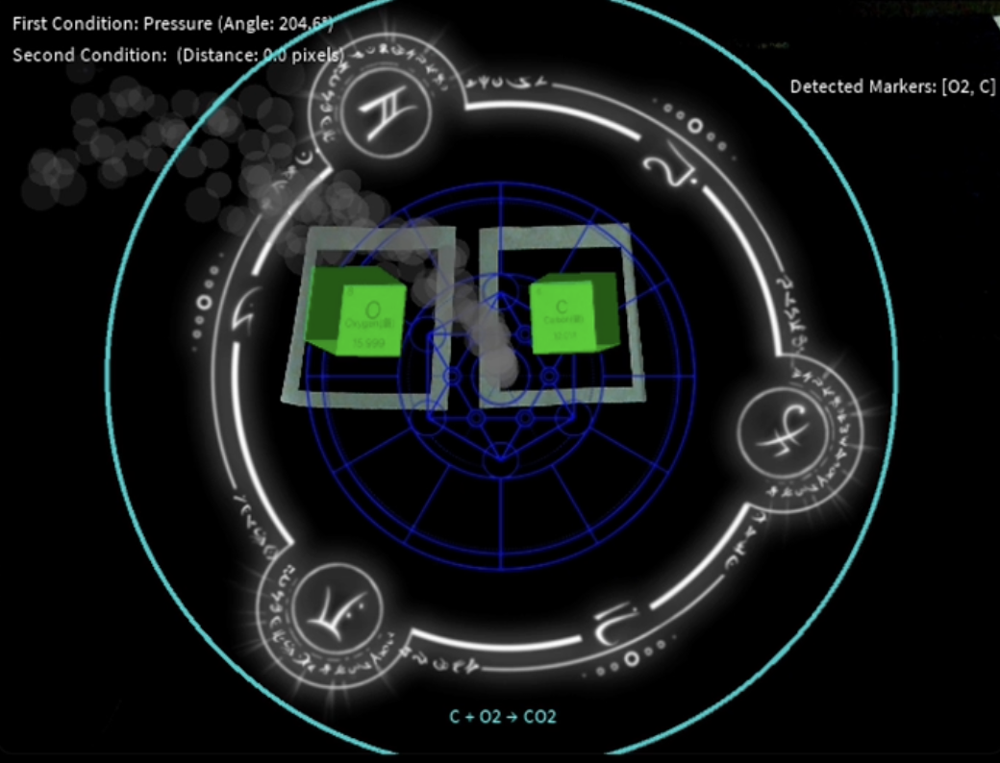
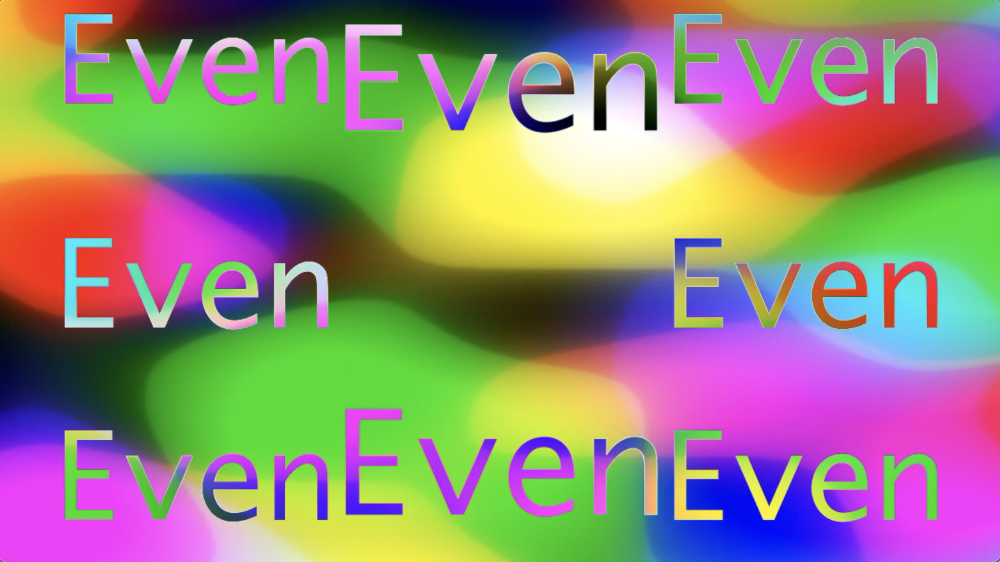

All Works

Video jigsaw puzzle
After the user pressed the spacebar, the video will be upsetted by inverting the
nine areas from area 0 to area 8 randomly. The user can choose to restore the video immediately or
keep watching the video as if using a new way to enjoy it. If the user want to restore the video
which means the user wants to change it back to the original appearance, he or she has to click on
the upper or bottom half of an inverted area depends on the area has been flipped horizontally or
vertically or not. If the area is inverted horizontally, click the upper half to restore it,
otherwise click the bottom half if the area has been inverted vertically. Although there is only a 3
x 3 squares canvas which looks quite easy to solve, the image will keep changing since it is a video
so it contains a certain extent of the challenge.

Magic circle ambient art
The ambient art mainly contains three things: circles that form a round with
different sizes and distances between the circles and the center point (pattern A), the popping
white-stroke squares (pattern B), and colorful lines with ever-changing length (pattern C). I used
analyze() to check the loudness which would affect the value of noise together with the position and
the opacity of pattern C. The length of patterns C and B, and the distance between the ellipses and
the center in pattern A would be adjusted by the amplitude too. I set the fft to calculate the
frequency of sound and save the data in the spectrum. The data would be shown through the size of
the circles in pattern A. Therefore, the visual elements are all based on the data received from the
sound and the user could press the space bar to remove the fading effect to create a mesh, magic
circle-like drawing as time goes by.

Universe x Rhythm Survival Game
This game looks like a combination of a survival game and a rhythm game since it
involves HP and the use of beat detector, and atmosphere makes me feel like I am in the universe so
here comes the name “Universe x Rhythm Survival Game”. The combo icons are released based on the
beat of songs, but they look like attacks from aliens too. Pressing the button when the combo
arrives the circles at the bottom somehow looks like blocking their attacks and defending the player
especially the HP will be deducted if s/he misses it.

“ (˙◠˙) ” Converter
In recent years, there has been a growing recognition of the importance of
anxiety and its impact on individuals and society as a whole. The heightened awareness of anxiety
issues has inspired us to take action and find ways to address these challenges. We have developed a
comprehensive system to address the issue of anxiety by implementing various features and
techniques. Through extensive research, we have gained insights into anxiety and effective methods
for managing it.
Watch on YouTube ↗

Onyx Veil - The Abyss of Amnesia
Discovered the song “Onyx Veil -The Abyss of Amnesia-”
Imaginations popped up in my mind
Learning Maya -> the ability to create 3D animations
Want to create an animation for this song
Watch on YouTube ↗

Edges highlighted effect using Convolution Kernels
Image-processing algorithm that highlights edges using convolution kernels.
Pokemon card effect using 3D pixels
Recreates the classic Pokémon card holographic shine using 3D pixel manipulation.

Splitting RGB effect using the RGB value extracted
Separates and displaces Red, Green, and Blue channels for a chromatic aberration
look.

Gothic stained glass windows using Mosaic concept
Generates stained-glass-style artwork by applying mosaic tiling with color
averaging.

Temporal Face-Mapped Video Playback
Maps video frames onto a detected face over time, creating surreal face-tracked
playback.

Pop Cat Defense: Motion-Activated Gameplay
Motion-triggered defense game featuring the famous Pop Cat meme.

Move to Support Your Idol!
Body movement controls cheering animations to “support” a virtual idol on screen.

AlchemAR - AR game
The objective of “AlchemAR ” is to create an interactive AR platform where users
can engage with chemical elements to form compounds through virtual reactions. Seven elements were
selected to demonstrate ten chemical reactions, with AR markers designed to represent each element.
These markers enable users to select elements and observe corresponding 3D visualizations and
reactions.

Rhythm Trainer
Interactive rhythm training device with light and sound feedback built on
Arduino.

Emoji Board
Physical emoji reaction board controlled by buttons or sensors.

Machine Learning: Anime Character || Art Style Generator
A Convolutional VAE model that offers inspiration for creating new characters,
fosters a stronger sense of individuality and preserves the art style.

“The Window Seat of Memory” with MemoralLens
Interactive physical installation merging multimedia tech and human connection to
evoke personal reflections on memory and loss.

Chromatic Fractals
Colorful, ever-evolving fractal visualizations created with shader programming.

Computational image collage work
A computational image collage work makes use of a replicator network to show
album covers of a Japanese singer. I chose them because I could see the subtle evolution of the art
style in the covers from different periods. Automate the arrangement of the images so that it will
generate (almost) infinite combinations.

VisualText
A generative visual-text responds to music in a rhythmic way, referencing the
style of the work of Korea artist group Young-Hae Chang Heavy Industries. The composition "loop
through" the text in an automated manner.

You Have the Power to Plant Seeds in Others’ Hearts
It is an interactive installation that blends technology and human connection to
share my personal reflections.